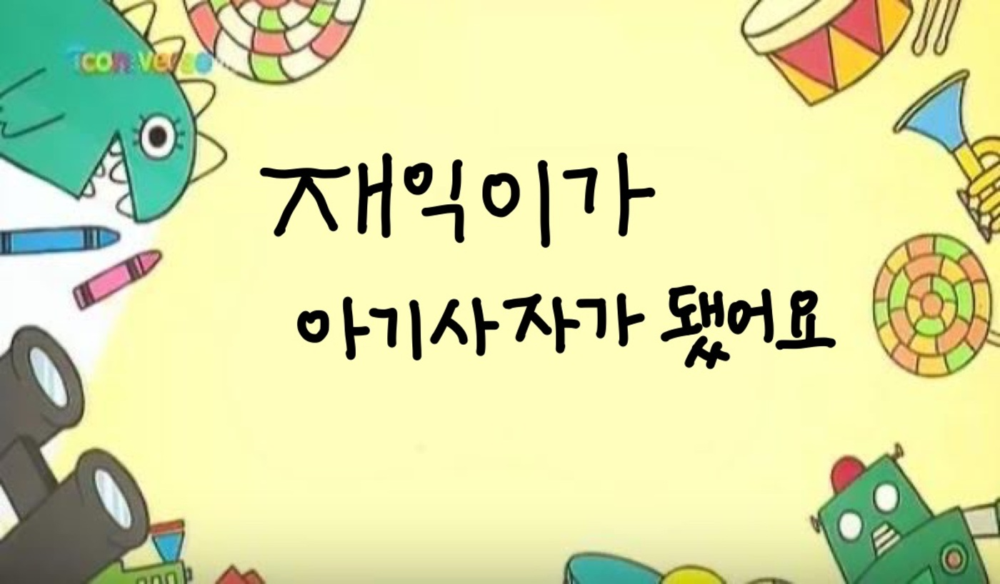
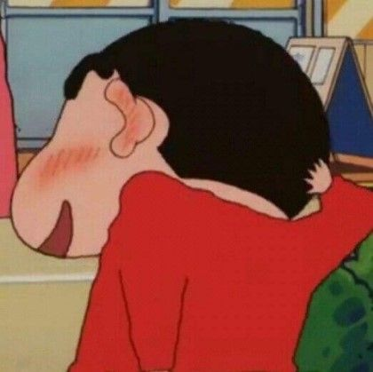
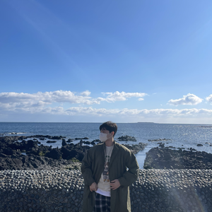
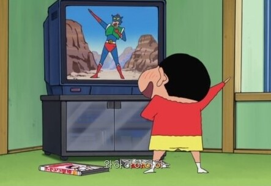

Hobby
드라마 보는게 인생의 힐링 포인트입니다!
평소에 감정이 좀 매마른 느낌을 받을 때가 많아서
드라마보면서 웃기도 하고 울기도 하면서 감성적인 부분을
많이 채워보려고 노력합니다!
<저의 인생드라마>
제가 가장 좋아하는 김은희 작가님의 "싸인"
서현진 배우님을 알게 된 "뷰티인사이드"
전미도 배우님을 알게 된 "슬기로운 의사생활" 제가 요즘 보는 드라마들!--->>>
NBA 직관 가보는게 인생의 목표입니다!!
실제로 농구를 잘하진 안해요 ㅎㅎ
골스(골든 스테이트)의 팬입니다!
스테판 커리를 좋아해서 골스의 팬이 되었습니다
TMI. 요즘 돌아온 클레이 탐슨과 커리, 그린과의 3각 편대가 저를 행복하게 합니다
혹시 느바 좋아하시는 분 계실까요....??
저는 바다 vs 산 하면 산이 더 좋은 것같아요!(물론 바다도 좋아합니다)
얼마전에 북한산에 백운대라는 곳을 다녀왔는데
서울에서 가장 높은 곳에 올라가보니 먼가 벅차고 뿌듯!하더라고요
그 벅찬 감정을 계속 느껴보려구요
혹시 등산을 고민하고 계신다면 정말 강추합니다(더 더워지기 전에 가보세요!)
My Play List
제 샤워 플레이 리스트입니다!
애착하는 노래들만 계속 들어요
좋은 노래 있으면 추천부탁드려요!!

릴러말즈 - TRIP(Feat. Hannah)
성시경 - 넌 감동이었어.
어반자카파 - 봄을 그리다.
kookmin univ. software. LikeLion 10th.
안녕하세요! 이번에 멋쟁이 사자처럼에서 활동하는 이재익이라고 합니다
저를 막상 소개하려니까 많이 쑥스럽네요 ㅎㅎ
저는 국민대학교 소프트웨어학과에 재학중입니다
00년생이고, 19학번입니다!
이번에 멋사에는 프론트 엔드 공부해보고 싶어서 지원했고
비대면이라 여러 사람을 만나볼 기회가 없을거 같아서
협업하는 활동해보고 싶어서 지원했습니다!!
사는 곳 : 성북구 정릉동 (학교 옆에서 자취중입니다)
MBTI : ISTJ or ESTJ (i가 51이고 e가 49정도??)